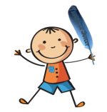

| Mama de George Cosbuc | Fericirea de Ioana C | A fost odata ... de Ioana C |
| Cele 8 versete de Geshe Langri Tangpa | Copilul de Ioana C | Comic de situatie de Ioana C |
Fericirea
de Ioana Cristescu
Ce este fericirea?
Exista oare ea?
La cine sa o caut
Si cine sa mi-o dea?
O cauta atatia,
Putini doar o gasesc.
Sa fiu eu norocosul
Si sa ma fericesc?
Un om dorest-un lucru,
Mai mult ca orisice.
Atunci cand il gaseste
E fericit. De ce?
Fiindca acum il are.
El scopul si-a atins,
Si mare-i fericirea
Cand implinesti un vis.
Dar omul e tot om ,
Si omul e tot nemultumit.
El fier a vrut sa aiba,
Il are. Vrea argint.
Gaseste fericirea atunci,
Daca poti.
Ne spui ca esti ferice?
Minciuni in vorbe porti!
Copilul
de Ioana Cristescu
Un suflet bun,
Curat, nu trecut prin viata
Umbla naiv,comun,
Fara sa-si dea seama
Cat de abandonata
Este a sa viitoare casa.
A fost odata.
de Ioana Cristescu
A fost odata ca niciodata o printsesa.
Inceputul etern al fiecarei vieti.
Cu un zambet de nepatruns,
Cu privirea nedumerita,
Incepe totul. Ei cresc,
Cresc, cresc, si la un moment dat
Se prafuiesc. Stresul ii cuprinde,
Iar privirea devine iar nedumerita.
Griji peste griji, necazuri peste necazuri.
Acei copii frumosi vor imbatrani,
Si cu ei se va sfarsi si zambetul meu.
Comic de situatie
de Ioana Cristescu
-Buna ziua, domnule M.!
-Buna ziua! Cu ce ocazie ati ajuns aici?
-Poveste lunga. Am fost cu femeia mea pana la croitoru' de pe Matasari pentru ca a vazut ea la cucoana Mari un palton. Cine stie ce-o fi vazut la el asa frumos. Acum vrea si ea unul cu guler larg si maneci mai sus de incheietura. Azi, fiind duminica, era inchis.
-Hai la matusa Maria! Poate ne rezolva ea!
Apoi, cum ea era plecata...
-Hai la Matei croitoru'!
Tot asa si nu stiu cum, dar am ajuns la Ploiesti.